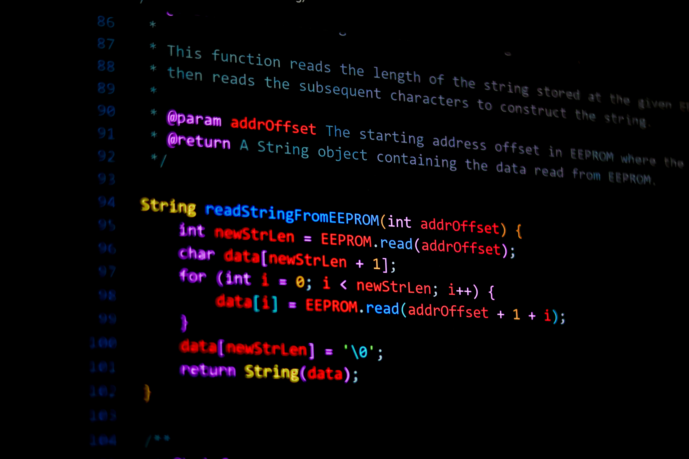

Disponible pour un stage — juin 2027
<Bonjour, je suis />
JonathanBalezi
Étudiant en informatique appliquée
Développement logiciel
Étudiant au Baccalauréat en informatique appliquée à l’Université de Moncton, je suis passionné par la création de logiciels fiables et utiles. J’aime travailler en C++, Python et explorer le développement web comme les interfaces graphiques.
Mon objectif : rejoindre une équipe en stage COOP pour contribuer à des projets concrets et progresser aux côtés de développeurs expérimentés.

01 / Projets sélectionnés
Du code qui répond à de vrais besoins.
Projets académiques et personnels récents. Cliquez sur une carte pour découvrir ma démarche, les défis et les résultats.
02 / Compétences
Ma boîte à outils.
Une évaluation volontairement honnête de mes acquis actuels et des technologies que je continue d’explorer.
Intermédiaire — à l'aise sur des projets Notions — bases syntaxiques
03 / Veille technologique
Ce que j’explore.
Apprendre ne s’arrête pas à la salle de classe. Voici les sujets qui alimentent actuellement ma curiosité.
04 / Parcours
Formation & expériences.
Un parcours en construction, guidé par la pratique, la collaboration et l’envie de progresser.
05 / Contact
Construisons quelque chose d’utile.
Je suis disponible pour un stage en développement logiciel à partir de juin 2027. Écrivez-moi, je répondrai avec plaisir.
jonathanbalezi05@gmail.com →